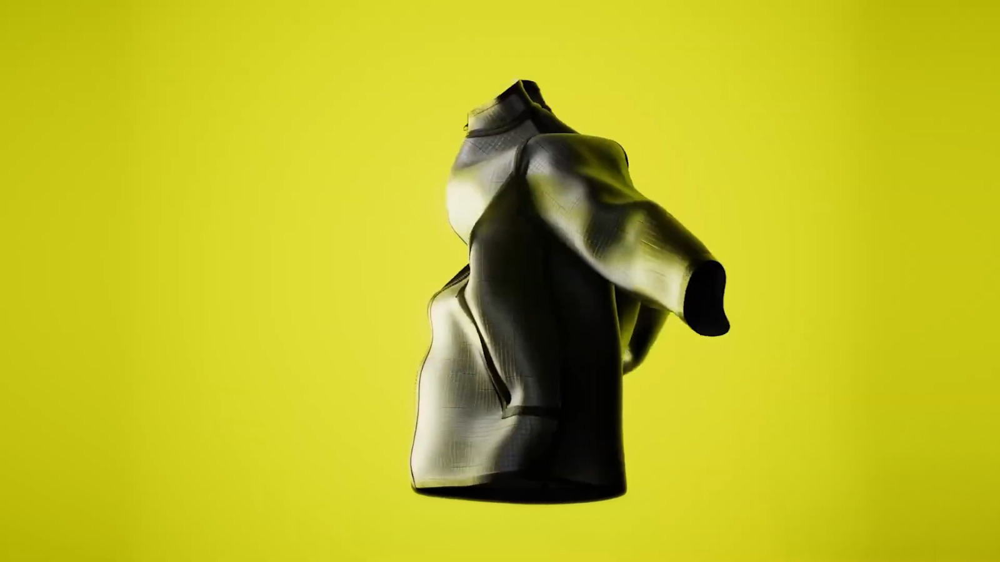
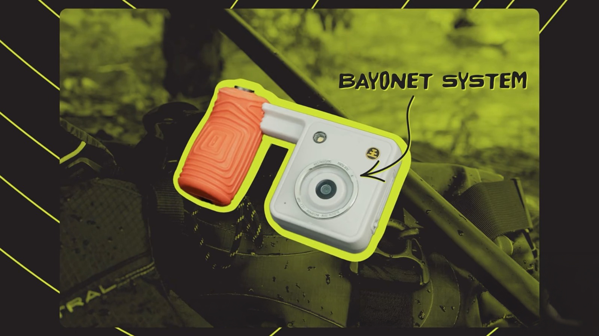
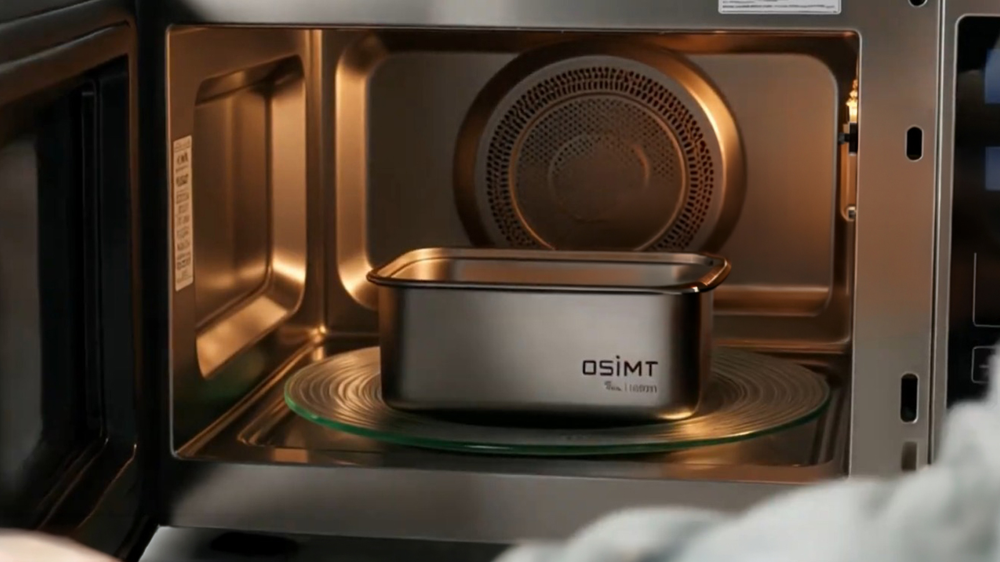
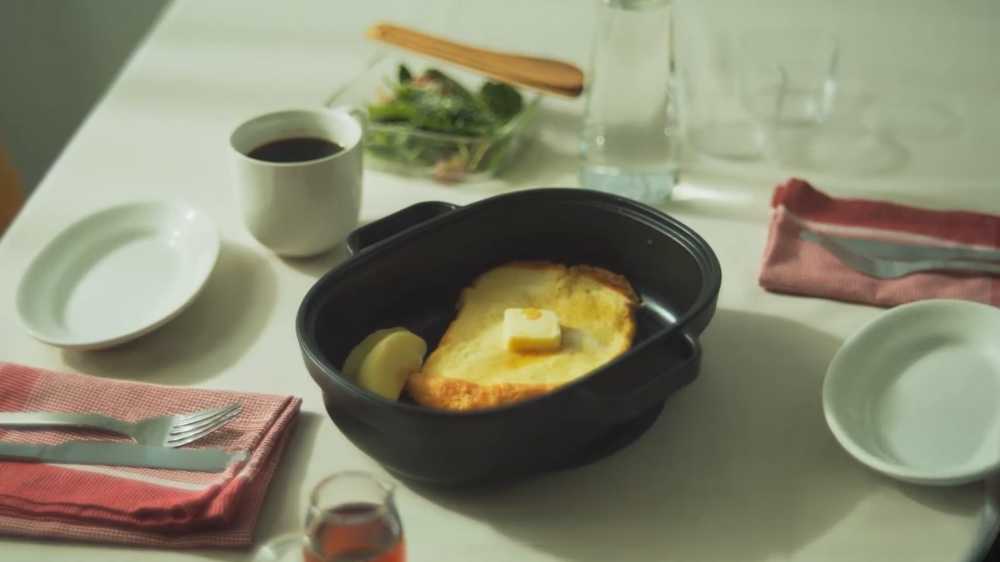
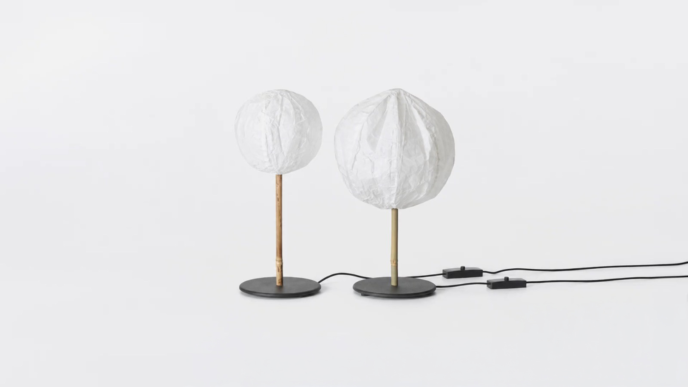
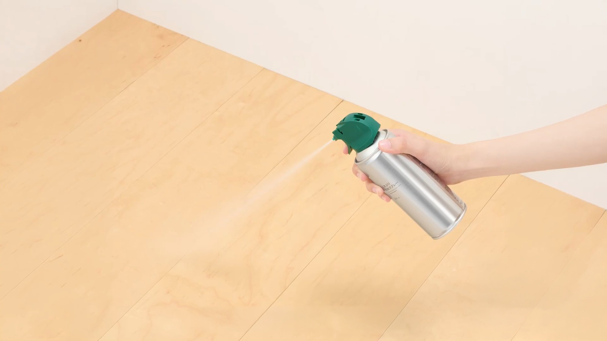
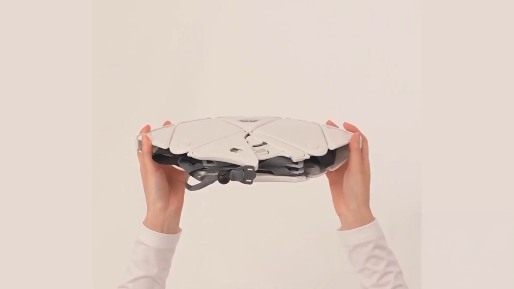
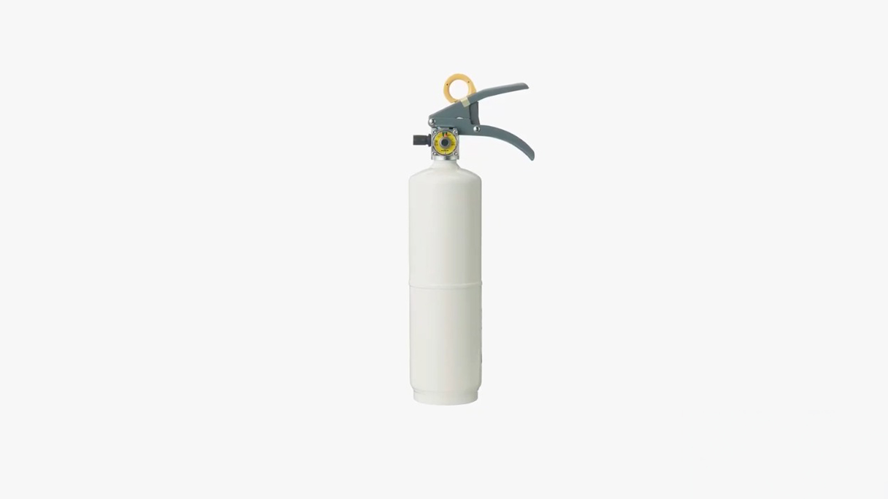
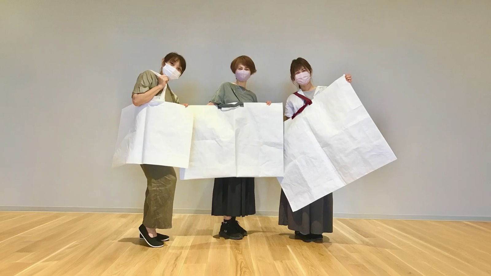

REFERENCE
기발한 제품 리뷰
[26년 10월 14일]

익숙한 기능을 낯선 방식으로 풀어내거나, 매일 쓰는 물건에 감각적인 디자인을 더한 제품들. 이번 글에서는 기발한 제품이 제안하는 아이디어와 매력을 살펴봅니다.
*직접 사용해 본 제품 후기는 아니며, 판매 여부는 제품마다 다를 수 있습니다.
기능을 낯설게 바꾼 물건들

‘더럭 재킷’은 잘게 부순 돌을 유연한 소재 위에 붙여 만든 옷입니다. 단단한 돌과 몸의 움직임을 따라 휘는 재킷이 한 벌 안에 공존한다는 점부터 시선을 끕니다. 일상복으로 입기보다는 소재와 제작 방식 자체를 감상하게 하는 작품에 가깝습니다.

‘포탈 AFN 7 어드벤처 카메라’는 후면 LCD 화면 없이 촬영하는 카메라입니다. 촬영 직후 결과를 확인하기보다 눈앞의 장면에 집중하도록 한 점이 독특합니다. 쌍안경이나 단안경에 어댑터로 연결할 수 있다는 아이디어도 야외 활동을 즐기는 사람의 호기심을 자극합니다.
주방과 집 안의 작은 불편을 바꾸는 제품들

OSIMT 티타늄 밀폐 용기는 금속 소재의 용기를 전자레인지에서도 쓸 수 있도록 고안한 제품입니다. 유리 뚜껑을 분리해 사용하는 구조로, 냉장·냉동 보관부터 조리까지 한 용기로 이어갈 수 있다는 점이 눈길을 끕니다.

무인양품의 렌지로 굽는 요리 그릴 플레이트는 전자레인지로 굽기, 찜, 밥짓기, 조림까지 할 수 있도록 고안된 조리 도구입니다. 조리 기구를 여러 개 두고 싶지 않은 집이라면 관심이 갈 만합니다. 생선이나 토스트처럼 겉면을 구워 먹는 메뉴도 만들 수 있다고 하니, 실제 활용도도 궁금해집니다.


무인양품의 생활용품은 기능뿐 아니라 집 안에 두었을 때의 모습까지 고려한 점이 돋보입니다. 종이풍선 조명은 종이풍선 구조에 대나무 지지대를 더하고 밝기 조절 기능을 갖춰, 공간을 은은하게 꾸미고 싶을 때 잘 어울릴 듯합니다. 벌레 퇴치용 스프레이 역시 포장을 눈에 띄지 않게 다듬어 생활 공간에 자연스럽게 놓아둘 수 있도록 했습니다.


재난 대비용품에서도 이런 배려가 이어집니다. 접이식 헬멧은 A4 크기로 접어 보관할 수 있어 자리를 덜 차지하고, 주택용 소화기는 집 안 분위기에 어울리도록 색과 형태를 고려했습니다.

무인양품 쉐어백은 대형 사이즈의 가로 길이가 거의 1m에 이르는 가방입니다. 평소 들고 다니기에는 부담스러울 수 있지만, 부피가 큰 물건을 옮기거나 짐을 정리할 때 유용해 보입니다. “언젠가 필요할지도 몰라”라는 생각에 장바구니에 담게 되는 제품이기도 하죠.
그래서 하나만 고른다면?
실생활에서 가장 먼저 써보고 싶은 제품은 무인양품 그릴 플레이트입니다. 반면 “필요는 없는데도 갖고 싶다”는 마음을 가장 잘 자극하는 제품은 돌로 만든 더럭 재킷입니다.
이 제품들의 매력은 쓸모를 따지는 데서 그치지 않습니다. 어떻게 쓰는지뿐 아니라 어떤 모습과 경험을 제안하는지도 제품을 고르는 이유가 될 수 있습니다.